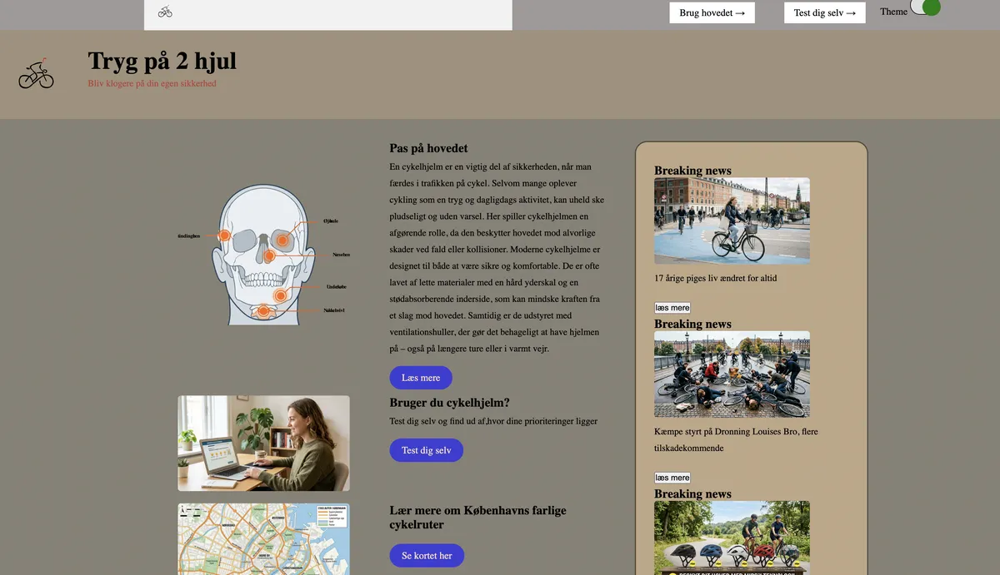

T4 Grundlæggende brugergrænsefladeudvikling
I dette tema lærte jeg at arbejde med både design og kodning af et interaktivt emergency site. Jeg arbejdede med UI-design, wireframes og style tiles for at skabe et design, der understøttede en nødsituation. Jeg lærte at lave infografik i Illustrator og gøre den interaktiv med JavaScript.
Derudover arbejdede jeg med formularer, dark mode samt styling i CSS og funktionalitet i JavaScript. Jeg fik også erfaring med at udvikle responsive sider og strukturere kode i HTML, CSS og JavaScript. Gennem hele processen dokumenterede jeg mit arbejde i Figma og lærte at forklare mine designvalg og hvordan min kode fungerer.

Opgave, proces og udførsel
I dette tema arbejdede vi med hele processen fra idé til færdigt website. Opgaven gik ud på at designe og udvikle et website om et valgfrit emne over fire uger. Vi startede med research, brainstorming og idéudvikling, hvor vi arbejdede med moodboards, user stories og målgruppeanalyse.
Derefter lavede vi både lo-fi og hi-fi prototyper i Figma, som blev testet gennem brugertests for at forbedre brugeroplevelsen. Til sidst kodede vi vores website i HTML, CSS og JavaScript, hvor vi arbejdede med design, responsivt layout og funktionalitet. Hele processen blev dokumenteret i Figma, FigJam og logbog samt præsenteret som en del af opgaven.
